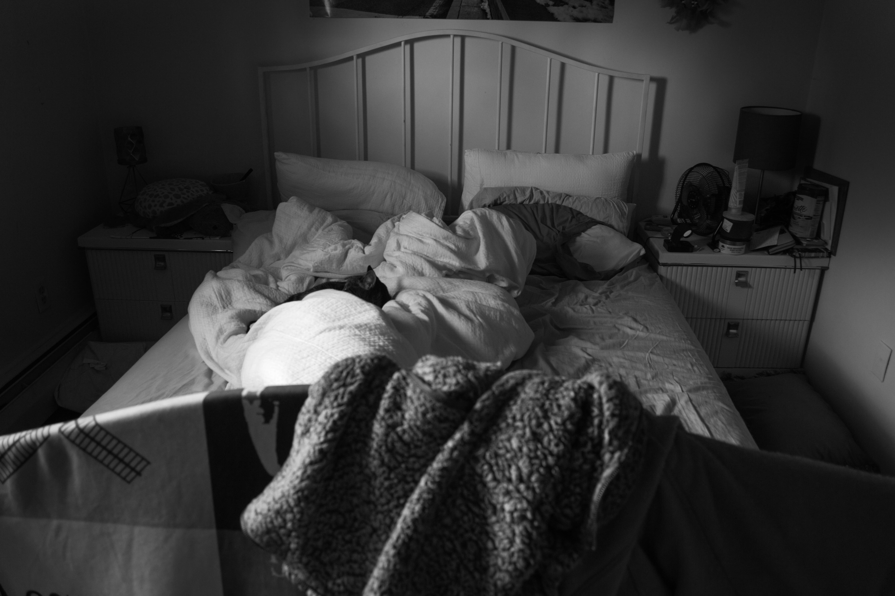
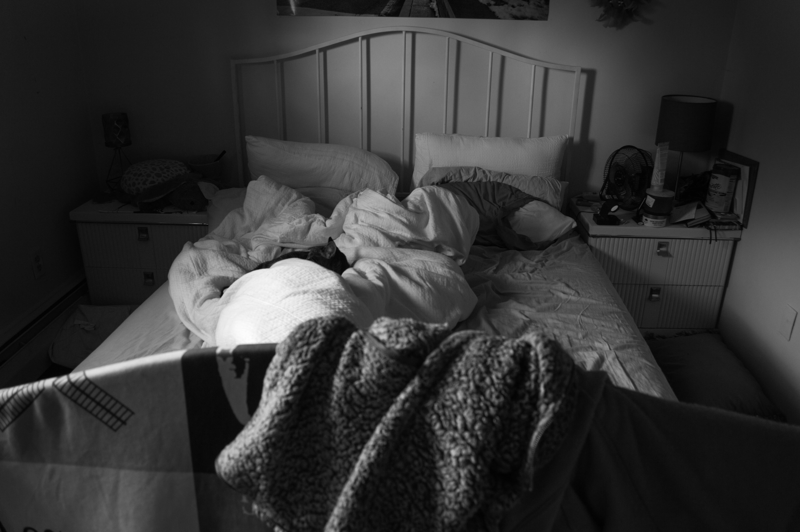
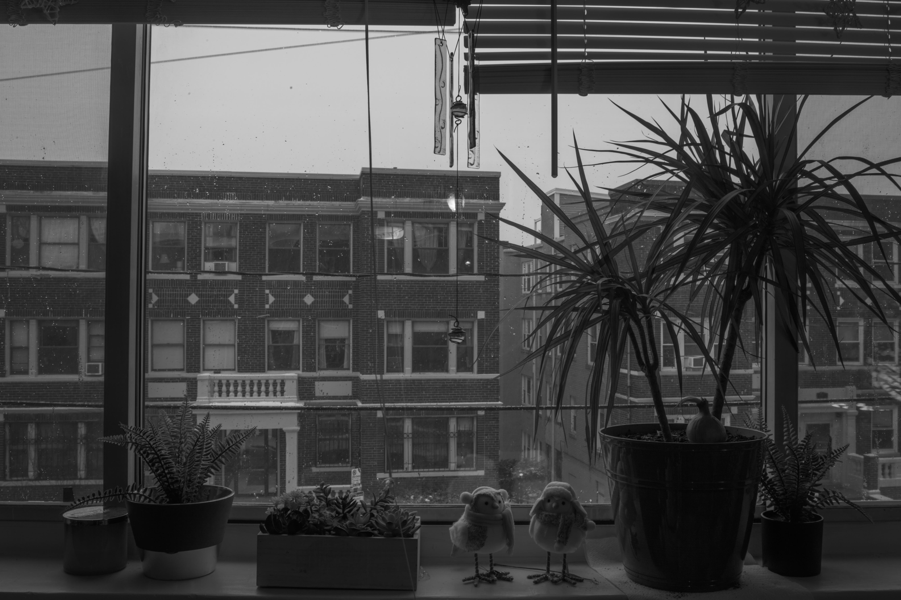
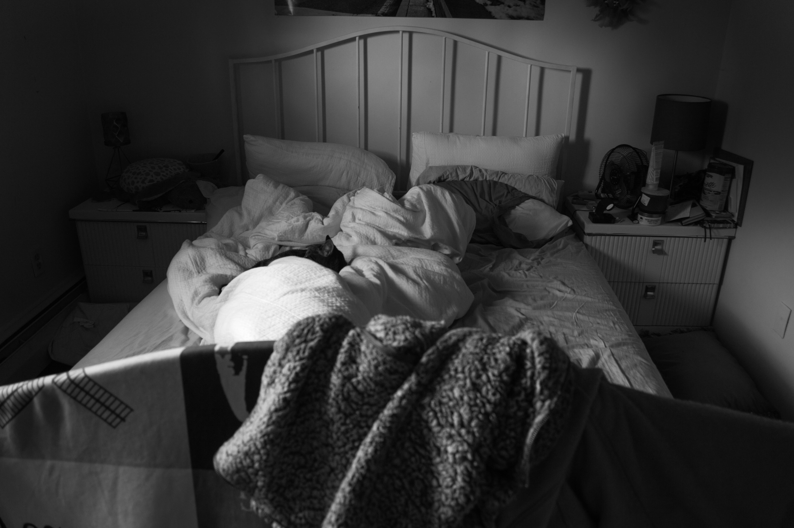
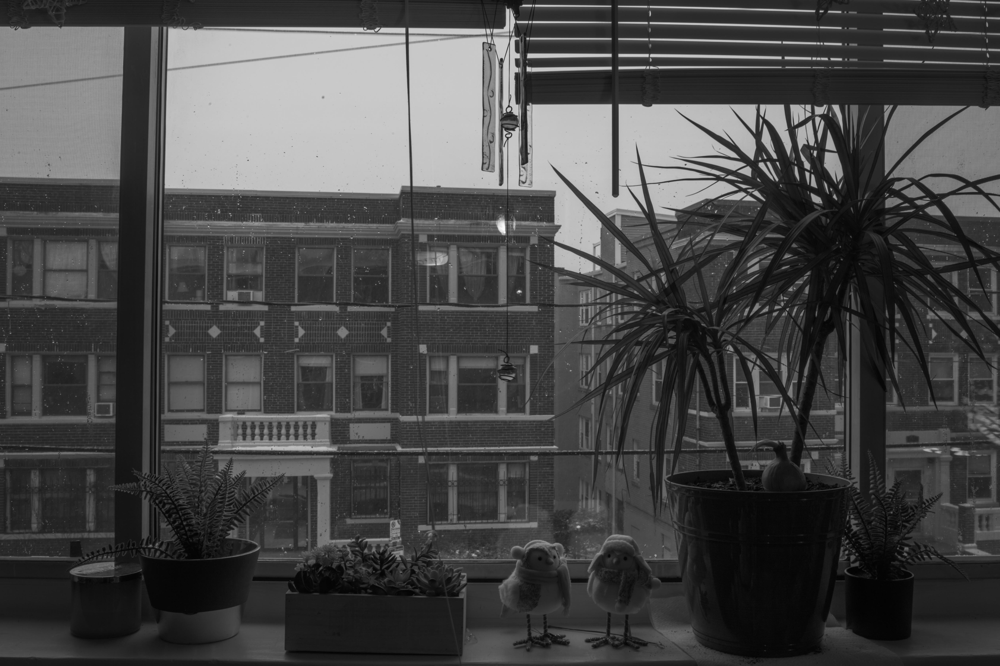
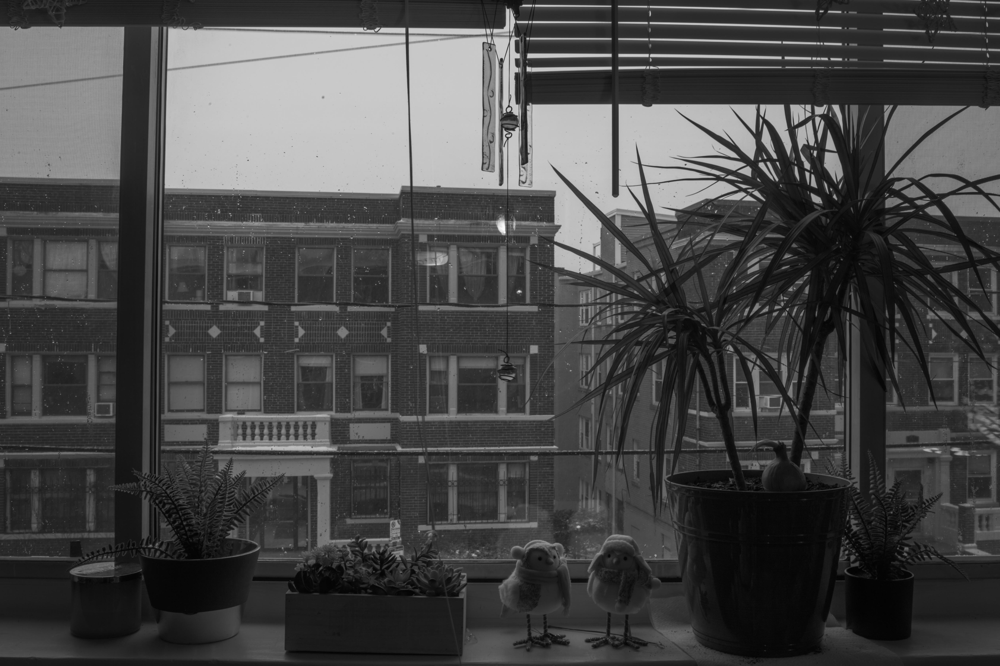
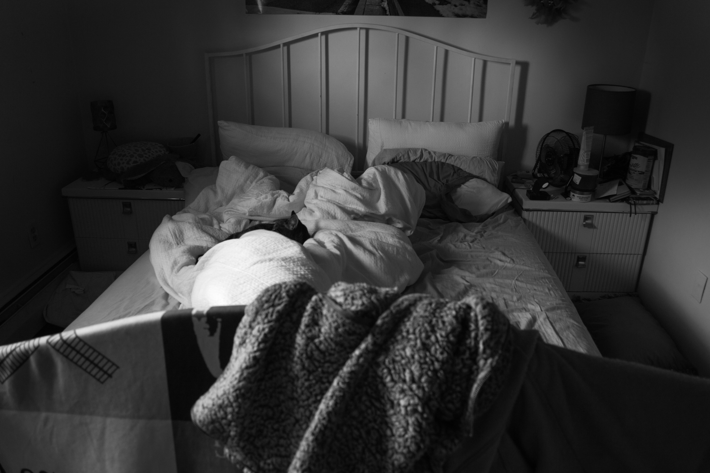
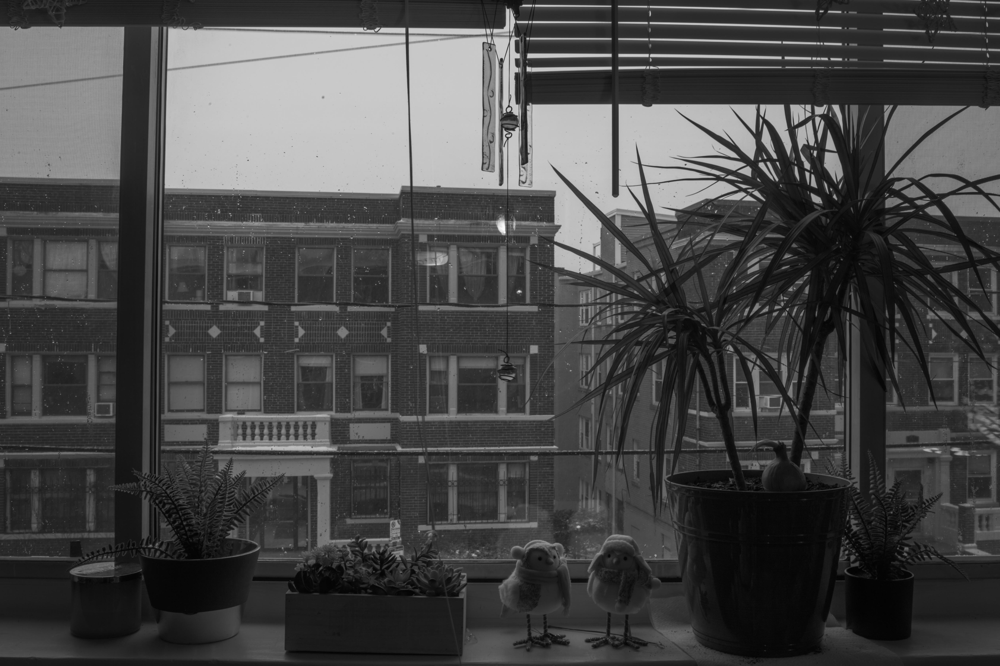

 
biography
Born in Boston, Massachusetts, Holland Kaye (she/her) centers her photographic work on her experience with mental health and how the current state of the world has changed. She is inspired by her social circle and a fascination with the environment around her. She plans to continue her current work exploring her mental health and return to her first photographic love: nature and landscapes.
interview
Holland Kaye in conversation with Juliana Temple
JT: Where did you grow up? Please give a brief summary of your life before college.
HK: I grew up in Natick, MA, and I went to Pratt before transferring to MassArt. When I was in high school there wasn’t a photography program available so I was learning on my own from youtube videos and bringing my work to my art classes and just asking for opinions. I found that I really enjoyed photography and I took a big leap and applied to art schools to pursue it. I’m really happy I made that leap and feel that I have grown so much as an artist and will continue to grow.
JT: What made you decide what to do for your thesis project?
HK: I had other plans for my thesis work. I can’t lie about it. Even in the first semester I tried other ideas but found that this is what I wanted to do and what came naturally to me. I have never been a self-portrait photographer. I had an assignment while I was at Pratt to photograph my fear and I did self-portraits because I was so scared of them. I feel this work has forced me to open my mind to other possibilities and I’m proud of it.
JT: Who are some of your biggest influences in photography and why?
HK: Some of my biggest influences are people whose work isn’t like my project at all. I originally was drawn to photography for landscapes and nature photography so I feel like my big influences are part of that side of photography. I would say Ellie Davies, Barbra Bosworth, and it’s cliché but Ansel Adams has always been - and I think will always be - one of my biggest inspirations.
JT: If we weren’t in a pandemic, would your project have been different?
HK: I think my work would have been very different if we weren’t in a pandemic. I think my mental health would be a lot different if we weren’t in a pandemic, as would a lot of people. If we weren’t in a pandemic I think my work would have included a lot of my friends. My original plan was to do something inspired by Nan Goldin where I take a lot of snapshots documenting our lives. But that didn’t get to happen, and I’m okay with that. I really like what my project has turned into.
JT: How do you balance self care and work?
HK: I wish I had a better answer for this. I don’t really think I do. Last semester I worked close to 30 hours every week at my retail job and that took a huge toll on my mental health. That’s really where this project came from. I think the best way that I balance self care and mental health would be when I just take a break for a weekend. It might not be the best when it comes to my school work but I sometimes just need to step back and take a weekend for myself.
JT: What role does your mental health play in your work?
HK: Under normal circumstances, I think that I use photography to escape my mental health. I used to travel around upstate New York and take photos of nature up there and I think that was an escape from my struggles and a way to understand them. The work that I am doing right now is centered around my mental health and I’m coming face to face with everything that I feel. But I think I need that right now. I need to look at it head on and figure out how I can help myself.
JT: Why did you pick this topic? Did you consider others?
HK: I feel like I picked this topic because for years I have dodged my mental health, or covered it up with something else. During the pandemic, I was alone with my thoughts. I couldn’t stack my schedule full of things to avoid it. I had to face a lot of things and rework a lot of issues that I thought I had dealt with. I did consider other topics at first but I ultimately wanted to do this work.
JT: What does your bed symbolize for you within this work?
HK: So I feel like beds have been a symbol for a lot of people through the pandemic but they are also a depression trope in a way. I feel like when people think of depression they think of just being in bed all day and not being able to get up and do the things you need and want to do. My bed is a thing in my life that I throw stuff on, or just leave it a mess. It was also a marker of how I was feeling through how messy it was. I stopped making it. I stopped caring what was on the side tables. I watched it turn into a mess and I watched myself do the same thing. I feel like my bed is me in a way.
JT: What draws you to self-portraits?
HK: Before COVID I wanted to expand my work into photographing people. I tried my best to photograph my friends and family but it never came out the way I wanted it to. So I moved to self-portraits to understand how to be in front of the camera. I feel like when the photographer doesn’t know what it feels like to be in front of the camera it can be really hard to help other people be in front of the camera. I also feel like my project is really personal so I needed to include myself in it.
JT: Do you ever use your camera in a cathartic or therapeutic way?
HK: I have used my camera in the past in a therapeutic way. When I was photographing landscapes I feel like I used it as an escape and a way to focus my energy into other things. For this project I used it more as a tool to document my mental health journey.
JT: Are you interested in any books/poems/literature?
HK: I wish I could say that I have read poems and books that helped me with my mental health journey, but I don’t think I have. And the only reason is because honestly I don’t like reading too much. That’s probably the worst answer to this question.
JT: What are your plans for the future in photography? In life in general?
HK: My plans for photography in the future include branching out into a lot of different parts. I want to learn about corporate photography and fashion and I just want to keep growing my portfolio. I want to travel and take photos and be able to capture the joyous moments in my life. My life in general, I want to move away from Boston. I have been in Boston or the Northeast for my whole life and I want to branch out and meet new people and have the ability to see new places. I hope to come back to this interview, or Boston, or looking back on my thesis work in 2 years and be physically and emotionally in a different place in my life.